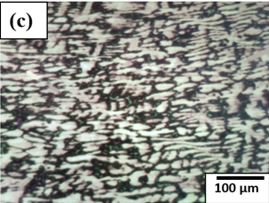
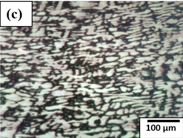

Microstructure of Common Metallic Materials (Cu, Al, Ti, brass, etc.)
1 Introduction
The term non-ferrous alloys are used for those alloys which do not have iron as a base element. Generally, the non-ferrous alloys commonly used in engineering application are based on aluminium, copper, magnesium, titanium etc. The microstructures of these non-ferrous alloys are highly diversified in nature and are dependent on their composition and processing method. Understanding of these microstructures is crucial for tailoring material properties for specific applications in aerospace, automotives, and electrical industries.
The advantages of non-ferrous alloys over ferrous alloys are as follows:
- Good resistance to corrosion without special processes having to be carried out.
- Low density and are hence used in manufacturing light weight components.
- Manufacturing is easier as casting can be done because of their lower melting point.
- Feasibility to be cold worked, as they possess FCC crystal structure and hence greater ductility.
- Higher thermal and electrical conductivities.
The mechanical properties of non-ferrous materials can be improved by using different types of heat treatment such as solution treatment, ageing, and precipitation hardening. Besides, they also possess features such as, high-temperature properties, oxidation and corrosion resistance, biocompatibility, thermal conductivity, and electrical conductivity.
2 Aluminium and its Alloys:
Aluminium, with its rich abundance of 8% on the earth's surface, finds extensive applications in various industries across the globe. It is indeed the third most abundant element on the earth. Aluminium and its alloys possess advantages including superior corrosion resistance, light weight properties, excellent machinability, good thermal and electrical conductivity, and high ductility. The pure form of Al is extracted from its most common ore, bauxite.
Heat treatment is an important tool used to modify the microstructure of the aluminium alloys.
Among different heat treatments, age-hardening is the most common process used for improving the mechanical properties of aluminium-4.5% Copper alloy system. Aluminium alloys find application in the fields of building/construction, packaging containers, transportation, electrical conductors, machinery/equipment’s, etc. Microstructure of aluminium depends highly on the processing method as well as the alloying elements, such as copper, magnesium, and silicon. On adding these elements, various types of phases are formed in the microstructure.
2.1 Al-Cu Alloys
Aluminum–Copper (Al–Cu) alloys constitute a class of high-strength, heat-treatable aluminum materials in which copper is deliberately added to enhance mechanical properties such as strength, hardness, and fatigue resistance. These alloys are extensively utilized in aerospace and automotive sectors where superior strength-to-weight ratios are essential.
Structurally, Al–Cu alloys possess a face-centered cubic (FCC) aluminum matrix embedded with fine, copper-rich precipitates—primarily Al2Cu—that develop through controlled solidification and aging processes. The formation and evolution of these intermetallic precipitates underpin the mechanism of precipitation (or age) hardening, which imparts exceptional strength to the alloy.
By combining low density, high tensile strength, and excellent fatigue performance, Al–Cu alloys serve as critical materials for advanced engineering applications, particularly in high-performance and weight-sensitive systems.
2.2 Al-Mg Alloys
Aluminum–Magnesium (Al–Mg) alloys constitute an important class of non–heat-treatable aluminum alloys distinguished by their outstanding corrosion resistance, superior formability, and high strength-to-weight ratio. Magnesium, the principal alloying element typically present in the range of 1–7 wt%, imparts significant strengthening to the alloy through solid-solution hardening.
Structurally, these alloys retain the face-centered cubic lattice of aluminum, within which magnesium atoms are uniformly dissolved, introducing lattice distortions that enhance mechanical strength. Unlike heat-treatable systems such as Al–Cu alloys, Al–Mg alloys achieve additional strengthening primarily through cold working processes, including rolling, drawing, or extrusion.
Owing to their combination of low density, excellent weldability, and exceptional corrosion resistance—especially in marine and chemically aggressive environments—Al–Mg alloys are extensively utilized in shipbuilding, automotive components, pressure vessels, and architectural applications demanding both durability and lightweight performance.
2.3 Al-Si Alloys
Aluminum–Silicon (Al–Si) alloys are versatile casting materials known for their excellent castability, low density, and superior wear and corrosion resistance. Containing 4–25 wt% silicon, these alloys exhibit a dendritic microstructure, where silicon forms discrete particles within the face-centered cubic aluminum matrix, thereby enhancing hardness, wear resistance, and fluidity during solidification.
The eutectic composition (~12.6 wt% Si) provides an optimal balance of strength, ductility, and casting performance. With properties further tunable through alloying additions (e.g., Mg, Cu, Ni) and heat treatment, Al–Si alloys are extensively employed in automotive and aerospace applications such as pistons, cylinder heads, and lightweight structural components.
Figure 1. Optical microstructure of (a) annealed aluminium (b) rolled aluminium.
Figure 1 shows two different types of microstructures of aluminum in annealed and rolled conditions. Figure 1(a) shows the microstructure of the aluminum in an annealed condition characterized by larger grains with distinctive grain boundaries. Annealing is a typical heat treatment used to relieve the presence of any internal stresses in the microstructures and thereby improve the mechanical properties of the alloy system. This improves the ductility and formability of the aluminum alloy by annihilating the dislocations. This heat treatment makes aluminum alloys for meeting specific applications, including aerospace, automotive, and construction applications, where light weight, corrosion resistance, and enhanced foamabilities are the most widely used properties. Figure 1(b) shows the rolled aluminum microstructure characterized by distinctive grain structural alignments resulting from rolling. Rolling operation elongates the grains along the rolling directions due to the application of mechanical forces during the rolling operations. This type of rolling operation produces preferred textures within the microstructures. The dislocation density in rolled aluminum is relatively high and causes an increase in the strength of the material. In summary, rolled aluminum exhibits a microstructure characterized by elongated and aligned grains along the rolling direction, forming a distinct texture. The alignment of grains, coupled with the reduction in grain size and the presence of dislocations, imparts specific mechanical and anisotropic properties to the material, making it suitable for various applications where strength, lightweight construction, and formability are essential considerations.
3 Copper and its Alloys:
Copper is essential for modern living. It delivers electricity and clean water into our homes and cities and makes an important contribution to sustainable development. More than that, it is essential for life itself. Copper is a mineral and an element known as naive copper. It is an industrial metal used mostly in the unalloyed and alloyed conditions. It is extracted mostly from the ores of chalcopyrite, chalcocite, and cuprite. Copper and its alloys are well known for their higher ductility and formability, excellent electrical and thermal conductivity, ease of alloying additions, good antimicrobial properties, anti-fouling properties, excellent range of colours, higher durability, better weldability, recyclability, availability, and sustainability. Alloying additions and processing are excellent sources of altering the microstructures of copper. Copper usually has three important alloys known as: Cupro-Nickel, Brass, and Bronze. Brass is an alloy of copper and zinc whereas Bronze is an alloy of Copper and Tin. Finally, cupronickel is an alloy of copper and nickel. Copper finds applications heavily in the electrical industries due to their higher electrical conductance, plating on different components, and other applications in form of brass and bronze alloys.
Figure 2. Microstructure of (a) annealed copper and (b) rolled copper.
Figure 2 (a) shows the microstructure of annealed copper whereas Figure 2 (b) shows the microstructure of rolled copper. Microstructure of annealed copper is characterized by larger, equiaxed grains, reduced dislocation density, and improved ductility and electrical conductivity. In addition to that copper also forms annealing twins in its microstructures during annealing. Annealing is a crucial process in the production of copper products for various industries, including electronics, construction, and transportation, where the desirable properties are softness, malleability, and high conductivity. Formation of annealing twins within the microstructure of copper can be explained by the atomic rearrangements and defect migrations, such as dislocations in the crystal lattice during annealing process. Twin formation reduces the overall energy of the system and relieves the stresses. Figure 2(b) shows the microstructure of the rolled copper that shows the presence of preferred textured orientation of grains along the rolling directions within the microstructure. It improves strength, mechanical hardness, reduces ductility. Furthermore, the degree of enhancement of the mechanical properties during rolling depends on the degree of deformation, initial rolling parameters, and initial conditions in copper. These factors affect the applications of copper including construction, electrical engineering, and manufacturing.
4 Brass
Brass is a copper–zinc alloy, whereas bronze is a copper–tin alloy. Brass typically exhibits a two-phase microstructure comprising an alpha phase (copper-rich) and a beta phase (zinc-rich), with the relative proportions of these phases determining the alloy’s mechanical and physical properties. Various forms of brass exist, including alpha brass (approximately 36% zinc) and alpha–beta brass. Common commercial compositions include 60–40 brass (60 wt.% Cu, 40 wt.% Zn) and 70–30 brass, with zinc serving as the principal alloying element.
Figure 3 compares the microstructural features of 70-30 brass, 60-40 brass and bronze.
 

Figure 3. Microstructure of (a) 70-30 brass, (b) 60-40 brass, (c) Bronze.
Brass is generally classified into three categories: (1) Cu–Zn alloys, (2) Cu–Pb–Zn alloys (leaded brasses), and (3) Cu–Zn–Sn alloys (tin brasses). These alloys combine high corrosion resistance with excellent machinability and are widely used as bearing materials. The addition of zinc enhances both ductility and strength, resulting in an alloy that is stronger than pure copper, though with somewhat reduced thermal and electrical conductivity. A detailed discussion of the various types of brass follows below.
4.1 Alpha brass
Brasses with up to 36% Zn are known as Alpha Brasses. Depending on Cu content,they are categorized into Yellow α brass and Red α brass.
4.1.1 Red α Brass
The brasses with 5-20% Zn content are known as Red α Brasses. Due to their better corrosion resistance, they do not observe any dezincification or season cracking. Some of the alloys under this category are discussed below.
* Gliding Metal: Gliding metal is an alloy containing 5% Zn and possesses shades of colour from red to brassy yellow. It is used for making coins, medals, tokens, fuse caps, etc.
* Commercial Bronze (90Cu-10 Zn): Commercial Bronze possesses excellent cold and hot working properties. It is used in making costume jewellery, lipstick cases, etc.
4.1.2 Yellow α Brass
Yellow α brasses contain 20 to 36% Zn. They exhibit good strength and ductility, making them suitable for drastic cold working, Season Cracking, and Pitting corrosion. Cartridge brass (70Cu-30Zn) and yellow brass (65Cu-35Zn) are some widely used yellow α brass alloys. Typical applications for these alloys include automotive inner parts and plumbing components. The addition of 0.5 to 3% of Pb improves the machinability of these alloys. Some of the alloys of the Yellow α Brass category are discussed below:
* Cartridge Brass: Cartridge Brass contains 70% Copper and 30% zinc. Cartridge brass is well-known for its excellent cold-working and forming properties. It is a popular choice for various applications, including producing plumbing components and musical instruments like trumpets and trombones. The alloy's good combination of strength, corrosion resistance, and malleability makes it suitable for these applications. Figure 3(a) shows the microstructure of 70-30 brass characterized by a two-phase structure consisting of an alpha (α) phase rich in copper and a beta (β) phase rich in zinc. This combination of phases gives 70-30 brass desirable properties, such as a balance between corrosion resistance and strength, making it suitable for various applications, including cartridge casings, plumbing components, and musical instruments. The specific microstructure and properties of the alloy can be further tailored through processing and heat treatment techniques to meet various application requirements.
* Admiralty Brass: The alloy with Cu 71%, Zn 28%, and Sn 1% is referred to as Admiralty Brass. It is used for the tubes and other parts of the condenser which are cooled by fresh water, and for many other purposes.
* Aluminium Brass: An alloy with 76% Cu, 22% Zn, and 2% Al. A minor amount of arsenic is added to inhibit dezincification in the alloy system.
4.2 Alpha – Beta Brass
The brasses which contain more than 36% of Zn form duplex microstructures with Cu-rich α phases and Zn-rich ß phases. They are thus known as Alpha Beta Brasses. Some of the commonly used α-ß brasses are listed below.
* Muntz Metal or Yellow Metal: Muntz Metal contains 60% of copper and 40% of zinc and is essentially a hot working material. It is used in ship sheathing, perforated metal, valve stems, condenser tubes, architecture works, ammunition casings, etc. The microstructure shown in Figure 3(b) shows the microstructure of this brass. The 60-40 brass microstructure is characterized by a two-phase structure consisting of an alpha (α) phase rich in copper and a beta (β) phase rich in zinc. This combination of phases gives 60-40 brass desirable properties, such as corrosion resistance, electrical conductivity, and good machinability. The specific microstructure and properties of the alloy can be further tailored through processing and heat treatment techniques to meet various application requirements.
* Naval Brass (60Cu-39.25Zn-0.75Sn): Naval brass, also known as Tobin bronze, is used for marine purposes. This alloy has increased resistance to saltwater corrosion. The addition of Pb improves machinability.
* Cast Brass: Cast alloy consists of white needles of α in a matrix of β. Many other alloying elements are present in the alloy including Tin 1 to 6% and Pb 1 to 10% with Fe, Ni, Al. Leaded red brass (85Cu-5Sn-5Pb-5Zn) is an example of cast brass. Used for fair strength and good machinability properties.
5 Bronze
Bronze is a copper-based alloy primarily composed of copper (Cu) and tin (Sn), which may also contain up to 12 wt.% of additional elements such as aluminum (Al), silicon (Si), phosphorus (P), or manganese (Mn). The precise composition of bronze can vary widely, giving rise to a diverse range of alloys with tailored properties. Its unique combination of high strength, corrosion resistance, malleability, and wear resistance has made bronze a valuable material for both functional and artistic applications throughout history. Compared to brass, bronze generally exhibits superior mechanical properties, hardness, and surface wear resistance, while retaining the ability to be rolled into wires, rods, and sheets.
Several specialized bronze alloys have been developed to meet specific application requirements:
5.1 Phosphor bronze (Cu-Sn-P): contains 0.5–11% tin and 0.01–0.5% phosphorus, offering high strength, toughness, and excellent corrosion resistance.
5.2 Silicon bronze (Cu-Si): typically contains 1–4% silicon, 0.5–1% iron, and 0.25–1.25% manganese; small additions of lead (≈0.05%) improve machinability. These alloys combine high strength and toughness comparable to mild steel with the corrosion resistance of copper.
5.3 Aluminum bronze (Cu-Al): contains up to 11% aluminum, often supplemented with iron, nickel, or silicon to enhance strength, hardness, corrosion resistance, and machinability. These alloys maintain high strength at elevated temperatures and are commonly used in marine propellers, pump rotors, water turbines, and chemical industry components.
5.4 Manganese bronze (Cu-Mn): provides improved mechanical strength and wear resistance for heavy-duty applications such as bearings and bushings.
Microstructurally, bronze consists of a copper-rich α-matrix phase, which imparts ductility, malleability, and good electrical conductivity, along with a β-phase, visible as darker regions, that enhances the overall strength of the alloy. This combination of phases underlies the versatility of bronze, making it one of the most widely used copper alloys in engineering, marine, and artistic applications. Figure 3(c) illustrates this microstructure, clearly showing the α-matrix and the reinforcing β-phase within the alloy.
6 Titanium and its Alloys
Titanium (Ti) is a lightweight, high-strength metal valued for its exceptional corrosion resistance, high melting point, biocompatibility, and excellent strength-to-weight ratio. Extracted primarily from ilmenite and rutile via the Kroll process, titanium exhibits two key crystallographic phases: the α-phase (HCP) stable at lower temperatures and the β-phase (BCC) stable at higher temperatures. The proportion of these phases, along with any intermetallic phases, can be controlled through alloying and heat treatment, enabling the development of α, β, or α+β titanium alloys with tailored mechanical properties.
Figure 4. Microstructure of Titanium alloys at different magnifications (a)-(d).
Prominent titanium alloys, including Ti-6Al-4V, Ti-6Al-2Sn-4Zr-2Mo, Ti-5Al-2.5Sn, and Ti-3Al-2.5V, combine high strength, toughness, and corrosion resistance. Their microstructures often exhibit lamellar Widmanstätten patterns, where the α- and β-phases contribute synergistically to ductility, strength, and formability. Titanium alloys are widely employed in aerospace (airframes, turbine engines, landing gear), automotive (engine components, propeller shafts), medical implants, sporting goods, and chemical processing equipment. Although these alloys are relatively costly and can be prone to ignition under extreme conditions, careful alloying and processing enable optimization of their properties for demanding engineering applications.
Figure 4(a)–(d) illustrates the lamellar morphology of α- and β-phases in Widmanstätten form observed in titanium alloy microstructures. Pure titanium is primarily composed of the α-phase, while the presence of β- or intermetallic phases depends on alloy composition and processing. By adjusting alloying elements and heat treatment, the microstructure and properties of titanium can be tailored to meet specific application requirements.